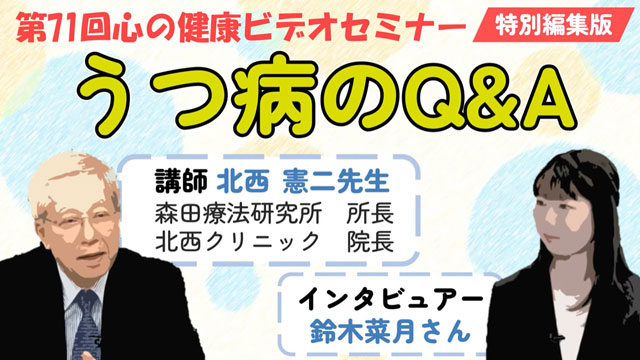
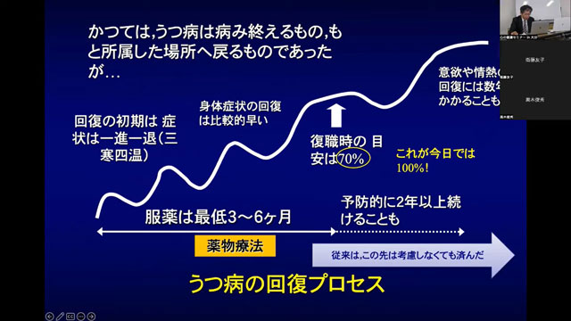
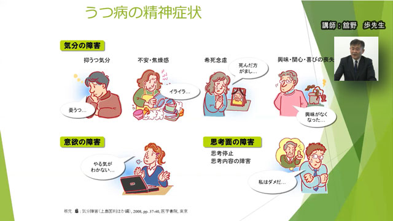
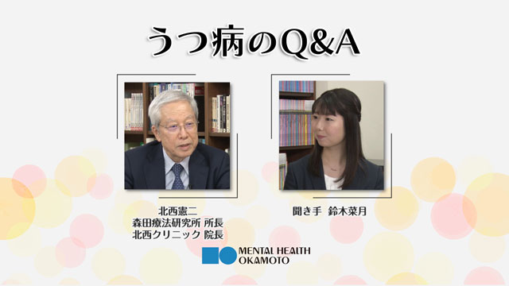
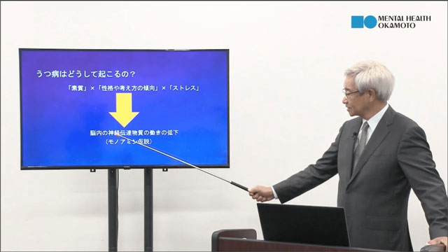
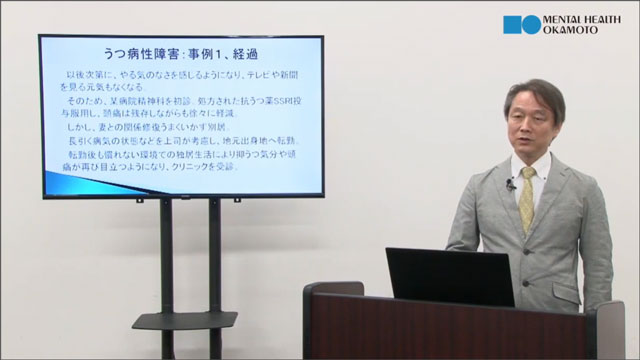
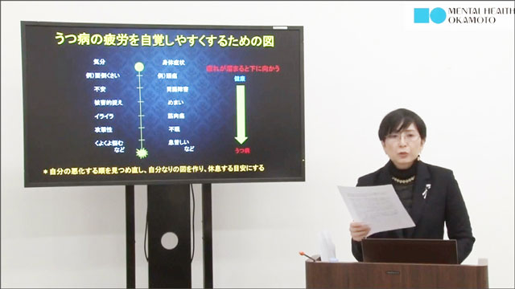
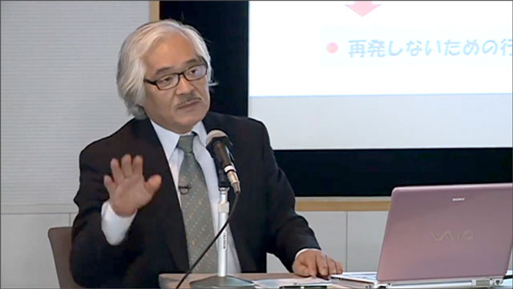

動画のテーマ：うつ病編
このビデオは、当財団がYouTube公式チャンネルで定期的に配信している心の健康ビデオセミナーの講演内容の一部を視聴できる動画です。動画のテーマはうつ病への森田療法です。



視聴動画（125） 6:44
特別編集版（1）うつ病のQ＆A特集
（北西憲二先生、鈴木菜月さん）
現在常時配信しているうつ病のQ&Aを、よりわかりやすくうつ病を理解しやすいように再編集しました。
動画を見る
視聴動画（116） 6:38
不安・うつと向き合い、生きる力を磨く～生きづらい時代の森田療法
（北西憲二先生）
現代社会で生きづらさを感じる原因として、現代社会の問題点を取り上げ、解説します。
動画を見る
視聴動画（95） 8:09
うつと不安のセルフケアー森田療法の智慧を活かそう
（黒木俊秀先生）
時代を経るにつれて複雑化していく社会の中で、不安を抱く日本人が増え、うつ病が多様化していることを解説します。
動画を見る
視聴動画（94） 9:40
不安とうつの対処法
（舘野歩先生）
コロナ禍などで急増するうつ病の症状を分かりやすく図解で解説します。また震災などの適応障害による不安やうつ病事例も解説。
動画を見る
視聴動画（93） 13:13
うつ病のQ&A
（北西憲二先生、鈴木菜月さん）
近年うつ病に悩む人が急増しています。うつ病とはどんな病気か、気になる点をQ&A形式で配信した内容の概略を視聴できます。
動画を見る
視聴動画（91） 9:26
働く人のメンタルヘルスと森田療法
（伊藤克人先生）
職場でメンタルの不調に陥った28歳女性会社員の事例を挙げ、健康な抑うつと本当のうつ病との違いを説明し、うつ病の病態、原因、病前性格（神経質性格）等を解説します。
動画を見る
視聴動画（90） 8:06
森田療法とうつ・抑うつ
（斎藤直巳先生）
うつ病への一般の基本的な対応と森田療法の捉え方を簡潔に説明し、長引くうつ病への森田的な取り組みを50代会社員の事例で解説します。
動画を見る
視聴動画（87） 9:52
神経質性格を持つうつ病患者への森田療法
（岩木久満子先生）
症例をもとに、神経質性格を持つうつ病患者の対人関係を中心にした森田療法の治療例を解説します。
動画を見る
視聴動画（74） 7:15
うつ病の森田療法と集団精神療法〜浜松医大の分かりやすい森田療法〜
（星野良一先生）
うつ病への森田療法の考え方と治療法及び浜松医大の集団精神療法の考え方や内容を解説します。
動画を見る
視聴動画（72） 9:50
初老期・老年期の不安、うつと森田療法
（塩路理恵子先生）
初老期、老年期が抱えるを身体的、認知的問題への対応が重要な時代に、森田療法的アプローチについて解説します。
動画を見る視聴動画（57） 4:24
森田療法と症状別治療法／不安・うつから回復する手立てとは
（中村敬先生）
森田療法は元来、神経症（不安症）に対する治療法ですが、近年ではうつ病にも活用が広がっています。その森田療法によりうつ病治療の考え方と治療法について解説します。（森田療法と症状別の治療法DVDより）
動画を見る
視聴動画（28） 3:09
現代の森田療法の理解ーQ&A（うつ病と日記療法）
（伊藤克人先生）
「うつ病で治る人と治らない人の違いは？」という質疑応答と「日記療法とはどういうものか？」という問いに関連した回答です。
動画を見る
視聴動画（19） 18:15
うつ病の森田療法
（中村敬先生）
薬物療法ではなかなか治りにくい長期化するうつ病に対して、その背景に共通する神経質的な性格傾向をもつ患者には森田療法を活用して治療することできます。
動画を見る